Operator runbook¶
Short reference for keeping a ProxiPort server healthy. Not a full admin guide — see install and migration for the first-run setup.
Service control¶
# Server
sudo systemctl status proxiportd
sudo systemctl restart proxiportd
sudo journalctl -u proxiportd -f
# Agent
sudo systemctl status proxiport
sudo systemctl restart proxiport
sudo journalctl -u proxiport -f
Paths¶
| Purpose | Path |
|---|---|
| Server config | /etc/proxiport/proxiportd.conf |
| Server data | /var/lib/proxiport/ |
| Server SPA files | /var/lib/proxiport/docroot/ |
| Server logs (default) | /var/log/proxiport/proxiportd.log (and journald) |
| Server PID file | /run/proxiportd.pid |
| Agent config | /etc/proxiport/proxiport.conf |
| Agent log | journald (-u proxiport) |
Backups¶
The server keeps everything that matters in two places:
- SQLite databases under
/var/lib/proxiport/. The set as of this writing:clients.db,monitoring.db,library.db,auditlog.db,api_sessions.db,api_token.db,client_groups.db,jobs.db,notifications.db, and the vault store atvault.sqlite.db. Each is created on demand the first time the corresponding feature is touched, so an early-life install may not have all of them on disk. Back the directory up with a stop-the-world snapshot or with the SQLite.backupcommand for hot backups. /etc/proxiport/proxiportd.conf— the config with the pinnedkey_seed,jwt_secret, and admin credentials. Treat it as a secret in its own right, or encrypt those settings — see encrypting the config secrets.- The at-rest DEK key file (if
[key_provider] type = "file"is configured) — losing it makes the encryptedtotp_secretcolumn, the entire vault, and any encrypted config setting unreadable. Back it up out-of-band, not only inside thedata_dirtarball, and ideally keep it off the disk that holds the databases.
User auth lives either in a JSON file ([api] auth_file = "...")
or in a table inside the main database ([api] auth_user_table =
"users" plus a configured [database] connection), so back those
up alongside the SQLite files as appropriate.
Tarball both directories for the simplest backup. Restore by stopping the service, replacing the directories, and starting again.
If you use MySQL instead of SQLite ([database] db_type = "mysql"
in proxiportd.conf), back up the database with your usual MySQL
tooling.
The vault is a special case. It is encrypted at rest with a
passphrase that is never written to disk (and, when a [key_provider]
is configured, additionally wrapped under the server DEK), so a server
restart always re-locks it — back up vault.sqlite.db alongside the
other databases and remember that restoring it requires re-entering the
passphrase through the SPA before the documents and per-client secrets
are readable again. If a key provider was enabled, the restored server
must also present the same DEK, or the vault fails closed.
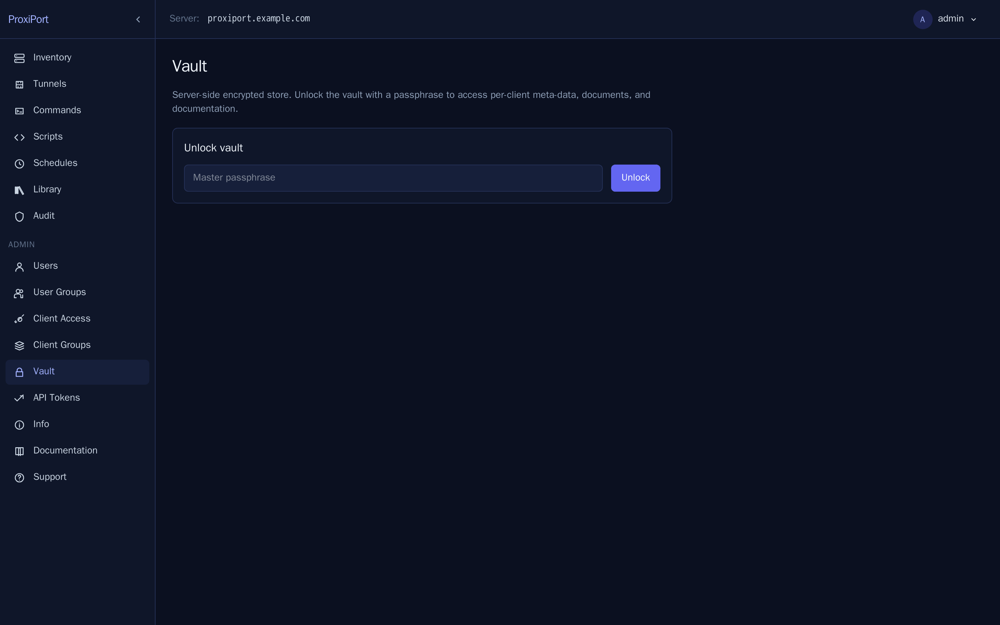
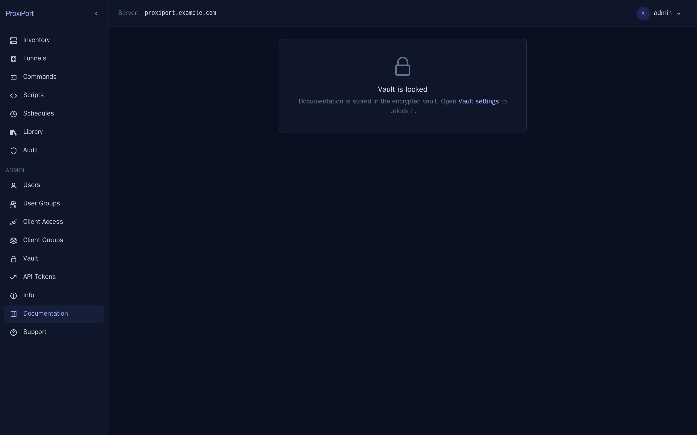
Encrypting the config secrets¶
proxiportd.conf holds the two most valuable secrets on the box:
key_seed, from which the SSH host key every agent pins is derived,
and jwt_secret, which signs every API session. Anyone who reads the
file in the clear can stand up a server your agents will trust and mint
admin tokens for your API — from a copy, off your machine, without
touching the running service.
Configure a key provider (the [key_provider] section of
proxiportd.example.conf) and those settings can live in the config as
ciphertext instead. Encrypt a value with:
proxiportd -c /etc/proxiport/proxiportd.conf secret encrypt
It prompts for the value without echoing it (or reads it from a pipe),
and prints an enc:v1:… string. Paste that in place of the plaintext:
[server]
key_seed = "enc:v1:0nQxk2…"
[api]
jwt_secret = "enc:v1:kZ0m9y…"
The same works for [server] auth, [api] auth,
[database] db_password, [smtp] auth_password, and the [pushover]
credentials. Settings without the enc:v1: prefix are still read as
plaintext, so a config can be migrated one value at a time, and nothing
breaks if you encrypt none of them.
Two things follow from the DEK being the only way back:
- Keep the DEK off the machine. A
type = "file"key sitting next to the config it protects stops nobody who steals the disk. Prefertype = "env"with the key injected at start (systemdEnvironmentFileon atmpfs, a secrets manager, your orchestrator). - A value the server cannot decrypt stops the server. Wrong DEK,
missing DEK, corrupted ciphertext —
proxiportdrefuses to start rather than run with a regeneratedjwt_secret(which would silently invalidate every session) or a different host key (which would break every agent's fingerprint check). Fix the key, don't work around it.
What else the key provider encrypts¶
Enabling a [key_provider] also encrypts the recoverable operational
data the server stores, transparently — you read and write it through
the API exactly as before, and only the on-disk databases hold
ciphertext:
- Command and script output (
jobs.db): stdout, stderr and error text are encrypted. The command itself and the one-line summary stay in the clear so the schedules "last run" view works without the key. - Monitoring data (
monitoring.db): the process list and mountpoint blobs (which can carry command-line arguments and filesystem layout) are encrypted. - Vault secrets and TOTP enrolment seeds, as covered in vault.md and the two-factor docs.
On the first boot after you enable a key provider, existing plaintext rows are re-encrypted in place. A stolen database read under the wrong key (or with none) fails closed — it never returns the ciphertext as if it were the value. As with the config secrets, this protects a stolen disk, not a live host that also holds the DEK.
File pushes are staged briefly on disk before agents pull them; that
staging directory ({data_dir}/filepush) is created owner-only. For the
strongest guarantee, mount it on a tmpfs so payloads never touch
persistent storage.
Rotating credentials¶
- Admin password. Edit
/etc/proxiport/proxiportd.conf, change the[api] auth = "admin:<new-password>"line, restart the service. Or, if running a multi-user setup withauth_file, edit that JSON file or the corresponding DB row.
The Users page surfaces a banner whenever auth is pinned in the
config ([api] auth = "admin:...") rather than user-managed —
rotating in that mode is a config edit + restart, not a SPA action.
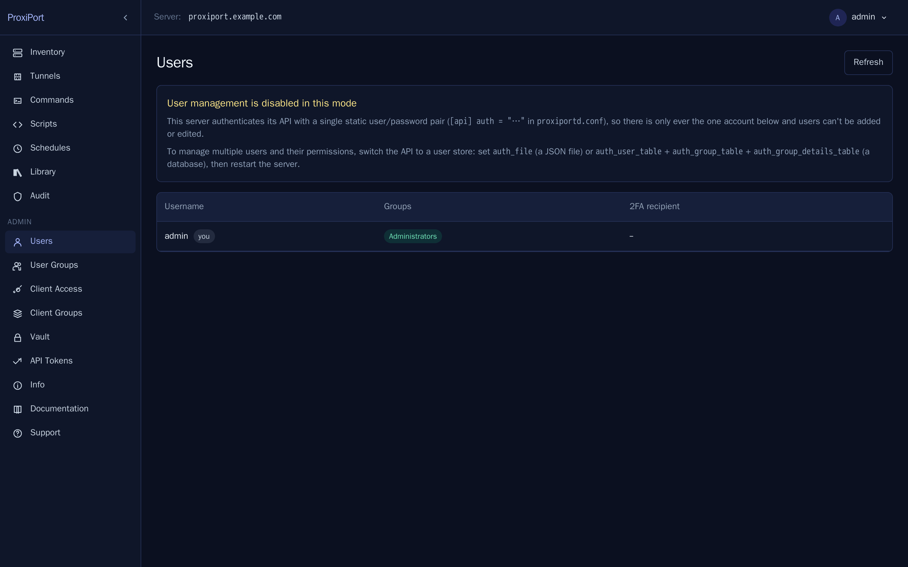
- JWT secret.[api] jwt_secret = "<long-random-string>" —
rotating this invalidates every issued session immediately. All
users will be redirected to /auth.
- key_seed. Rotating the seed changes the server's SSH host
key. Every connected agent will fail the fingerprint check
until its proxiport.conf is updated. Avoid rotating unless the
seed is compromised; coordinate with all agent operators.
Both of these can be stored encrypted — rotate by writing the new
value's enc:v1:… form into the config, exactly as above.
- client-auth credentials. Used by agents to register. Change
via [server] auth = "<id>:<password>" (single credential), or
via the JSON file pointed at by [server] auth_file, or via the
table named in [server] auth_table. Push the new credentials
to each agent and restart it.
When auth_file mode is in use, the credentials are also
manageable from the SPA at Client Access:
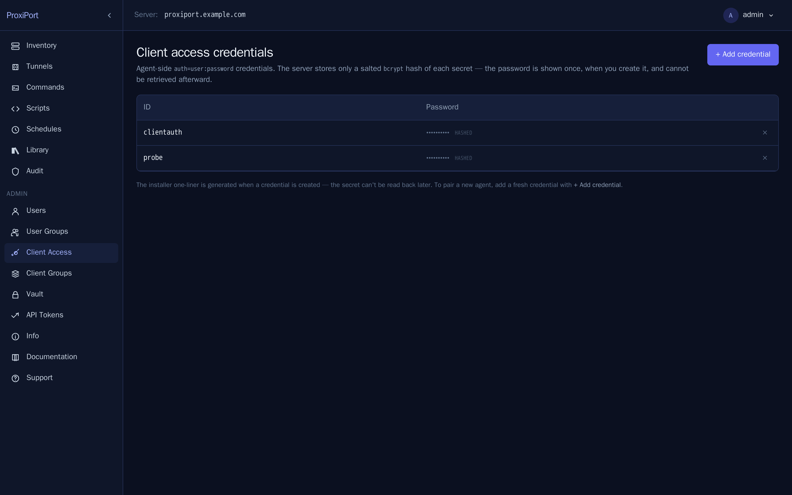
- API tokens. For programmatic API consumers, mint scoped API
tokens at API Tokens rather than reusing a human's
username/password. Tokens carry a lifetime and an explicit
scope (
read,read+write, …) and are revocable independently.
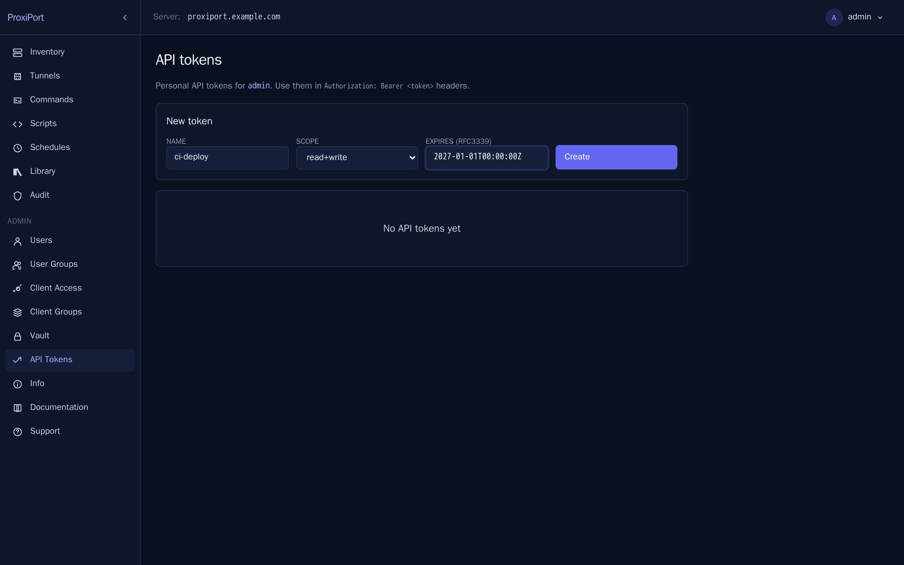
- TOTP second factor. Set
[api] totp_enabled = trueinproxiportd.conf, restart, and each user is prompted to enroll on their next login. The user scans the SPA's QR with any RFC 6238 TOTP app:
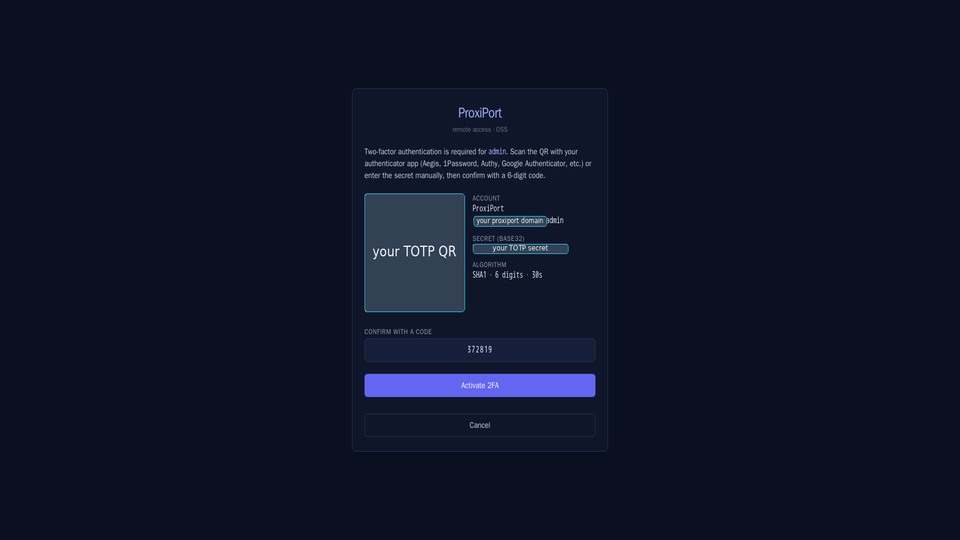
Admins can require an existing user to re-enroll from the Users page:
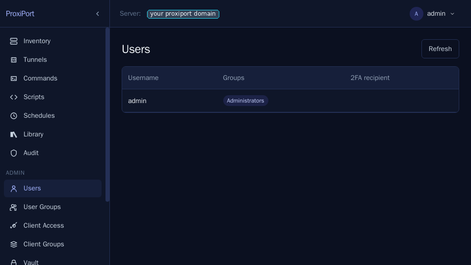
Once enabled at the server, the Info page reflects the new posture:
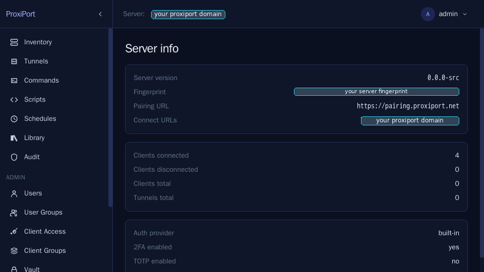
Each user's profile shows their TOTP enrollment state and lets them reset it:
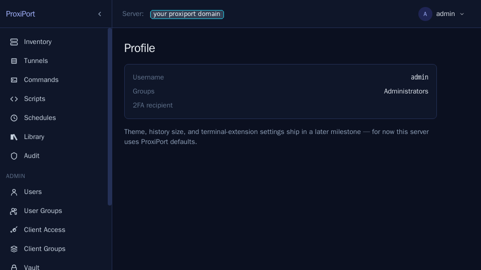
Capacity and limits¶
- Connected agents per server. SQLite handles a few hundred agents comfortably on modest hardware. For more, switch to MySQL.
- Tunnel ports.
[server] used_portscontrols the pool of ports the server may allocate for tunnels. Default20000-30000. Expand if you run out. - Per-user session lifetime.
?token-lifetime=<seconds>on/login; defaults to 10 minutes; the SPA asks for 24 hours.
Updating¶
- Stop the service.
- Replace the binary in
/usr/local/bin/proxiportd(or wherever your package manager put it). - Start the service. Schema migrations, if any, run on first start.
- Tail the logs to confirm.
For the agent, the same shape applies on each managed host.
Tunnels¶
A tunnel is a per-session listener on the server that forwards traffic back to a TCP port on the agent. Open one from a client's Tunnels tab.
![Tunnel create form — pick the agent-side address, the public
scheme, and an ACL. The server allocates the public port from
[server] used_ports unless you pin it
manually.](../screenshots/04-tunnel-create-form.png)
The ACL is enforced at the server's listener, not at the agent —
denied traffic never crosses the chisel session. Only my current
IP address is the default preset and reads the request's
X-Forwarded-For, falling back to the connection's remote address
when that header is absent. If you front the server with a reverse
proxy, configure the proxy to set X-Forwarded-For; with built-in
TLS the connection IP is used directly.
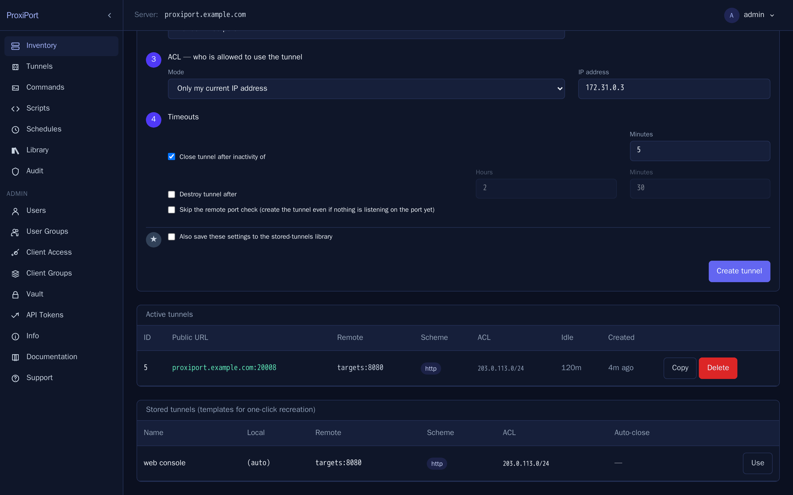
Tunnels also accept inactivity / lifetime caps, after which the server closes the listener and notifies the agent.
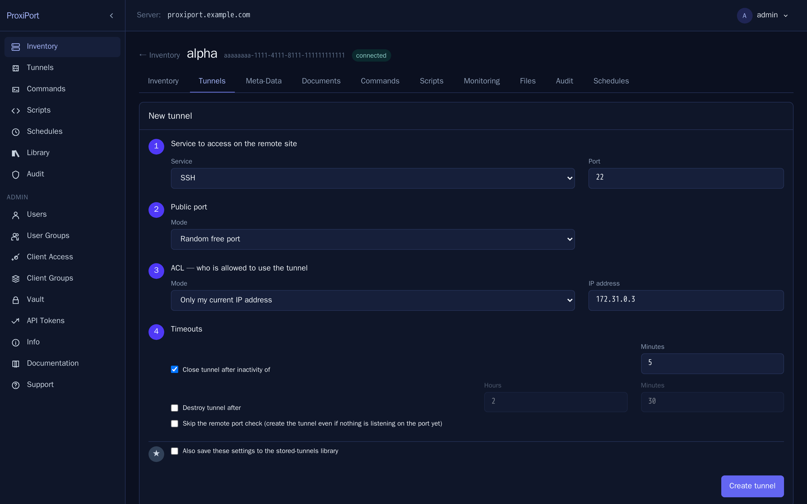
You can save a tunnel definition into the Stored tunnels library to re-open it later in one click.

The global Tunnels page is the operator's at-a-glance view across every connected agent.
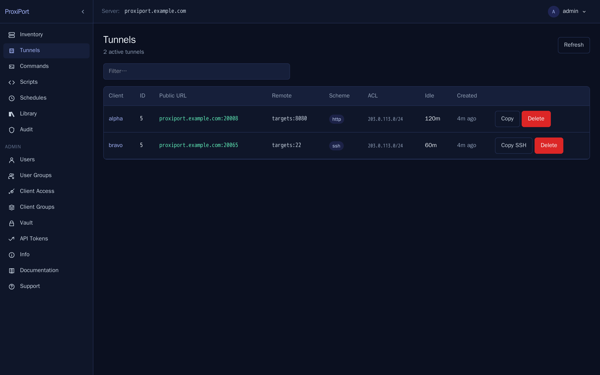
Finding and reusing tunnels from the API¶
The per-client endpoint GET /api/v1/clients/{id} includes that
client's active tunnels by default. The list endpoint
GET /api/v1/clients returns a lean projection — id, name,
hostname — so request the tunnels field explicitly when you want it
across the fleet:
GET /api/v1/clients?fields[clients]=id,name,tunnels
This is the same field-projection the list endpoint uses for every
optional attribute: ask for a field and you get it; a client with no
open tunnels reports an empty list. Each tunnel object carries the id
you delete it by (DELETE /api/v1/clients/{id}/tunnels/{tunnelID}), so
you never have to remember the id from when you created it.
Tunnels survive an agent restart¶
When an agent drops and reconnects under the same client id, the server
re-establishes that client's tunnels automatically — including a
manually pinned local port — and the restored listener starts carrying
traffic again with no operator action. Because the tunnel is still
there, opening a new tunnel to the same agent-side port returns
ERR_CODE_TUNNEL_TO_PORT_EXIST. Reuse the existing tunnel (look it up
as above) rather than recreating it; delete it by id first only if you
genuinely want a fresh listener.
Commands and scripts¶
ProxiPort can run ad-hoc commands or multi-line scripts against any
connected agent and stream the output back. The agent has to opt in
via commands_allow / commands_deny in its proxiport.conf —
running everything by default is intentionally not the shape.
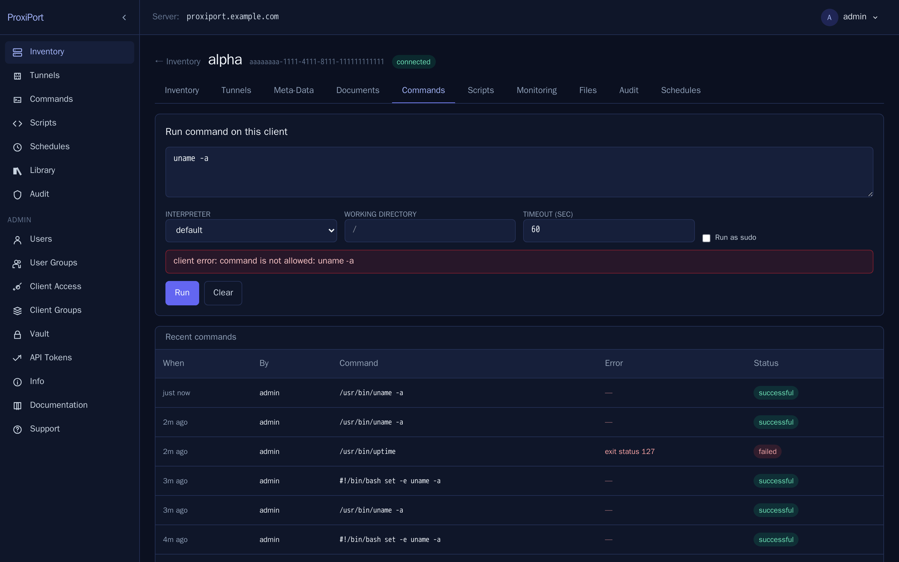
When a command is allowed, the SPA streams stdout / stderr live and prints the exit code at the end.
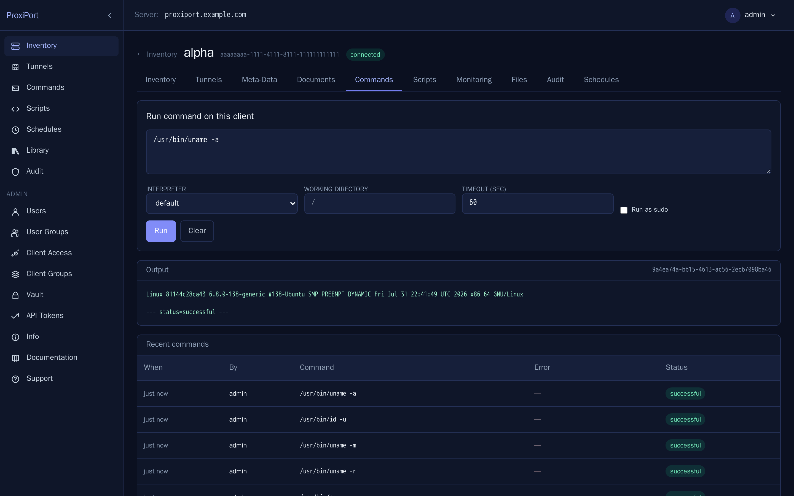
Scripts are the same control surface with a multi-line editor and
an interpreter selector (/bin/bash, /usr/bin/python3, …). The
agent writes the body to a tempfile, executes, and reaps the
process.
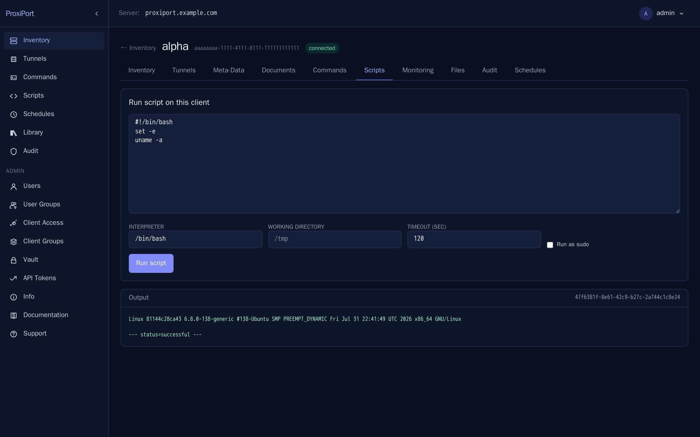
For repeated patterns, save commands and scripts into the Library:

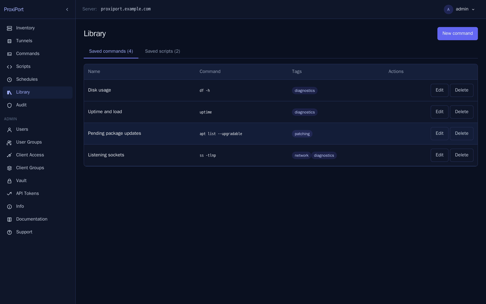
A library entry can be run against multiple agents at once from the Commands page — useful for one-shot fleet work.
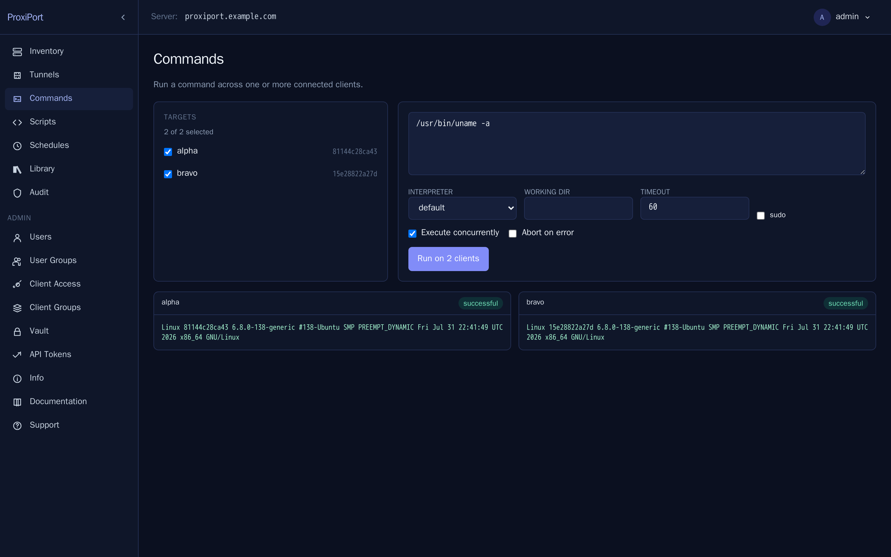
The global Scripts page is the same concept for whole-fleet script runs. It is still being reimplemented from the upstream shape — at the moment it is a stub that links into the per-client Scripts tab.
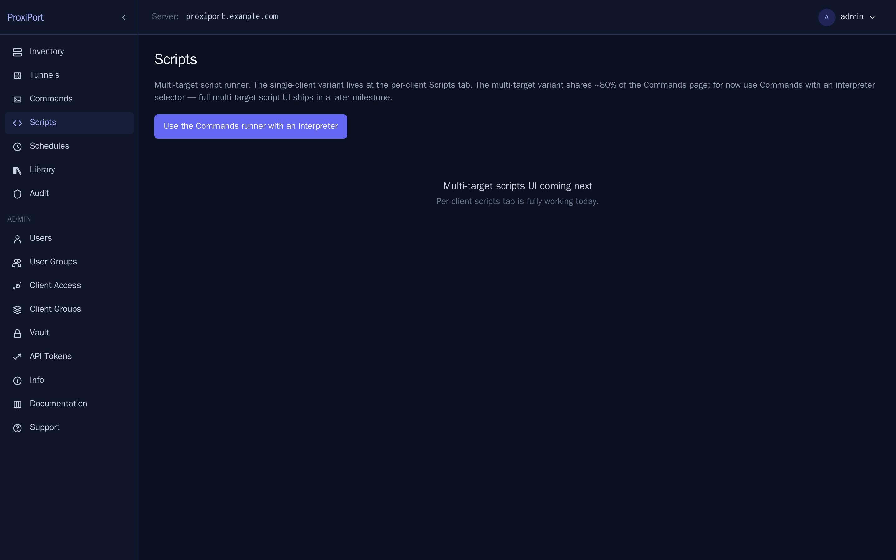
Schedules¶
For recurring runs, attach a cron expression to a saved command or script. The scheduler is in-process; no external cron is needed.
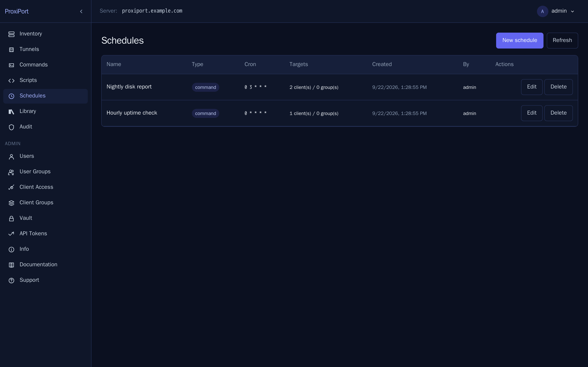
File transfer¶
Push a file from the server's filesystem (or paste it inline) to a chosen path on the agent. The transfer goes over the same chisel session as everything else.
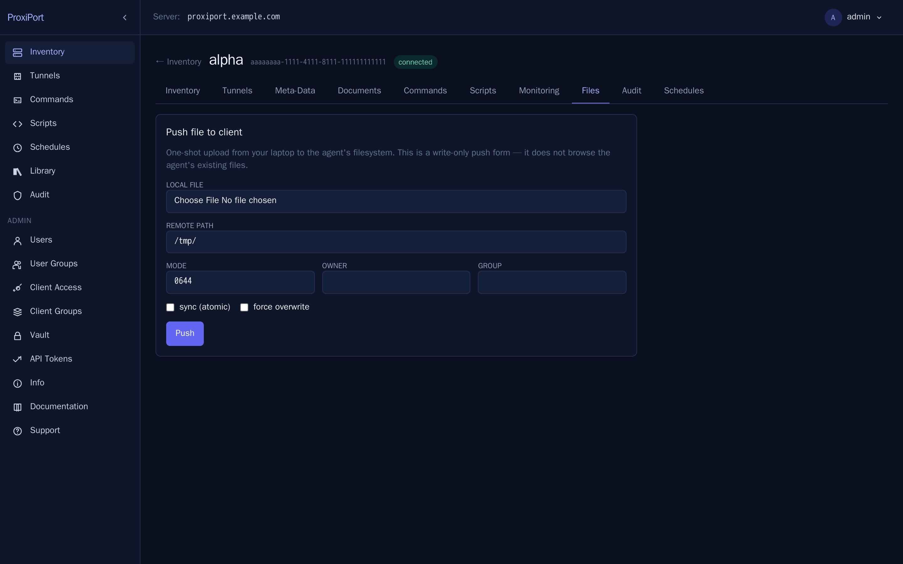
Audit log¶
Every state-changing API call writes an auditlog.db row with the
user, client (if any), action, timestamp, and the request payload.
The per-client view filters the same table down to events touching
one agent:
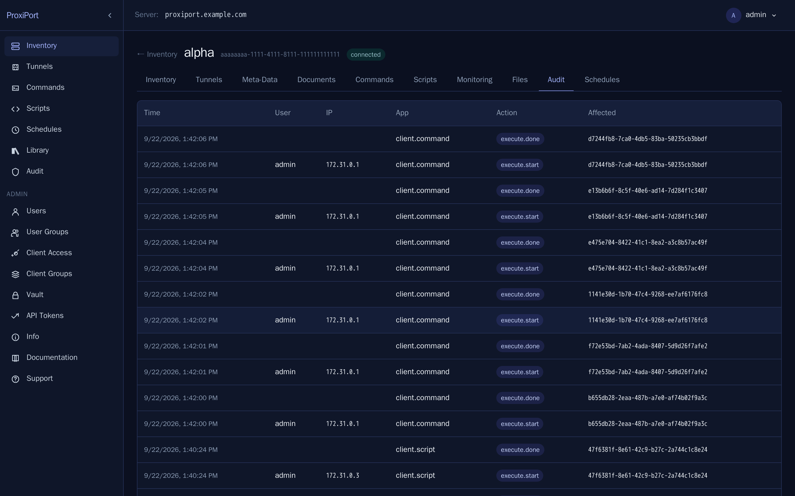
The global Audit page is for cross-cutting queries — who
created which tunnel, who rotated which credential. Reading a vault
secret — the one high-value read worth tracking — is recorded too, as a
read action (never the secret itself).
Tamper-evidence¶
When a key provider is configured, each audit entry carries a keyed HMAC chained to the previous entry (the key is derived from the server DEK, so it is not on the audited box in usable form). Editing or deleting a row after the fact breaks the chain. Check it with:
curl -s -H "Authorization: Bearer $TOKEN" \
https://<server>/api/v1/auditlog/verify | jq
A "Valid": true response means every entry verifies; a break reports
the sequence number and kind (mac — a row was edited, link/gap — a
row was removed or reordered). This detects tampering on the box; it
does not stop a host with the DEK from forging new entries — ship entries
to an off-host, append-only sink for that. Rotation starts a fresh chain
per auditlog.<date>.db file.
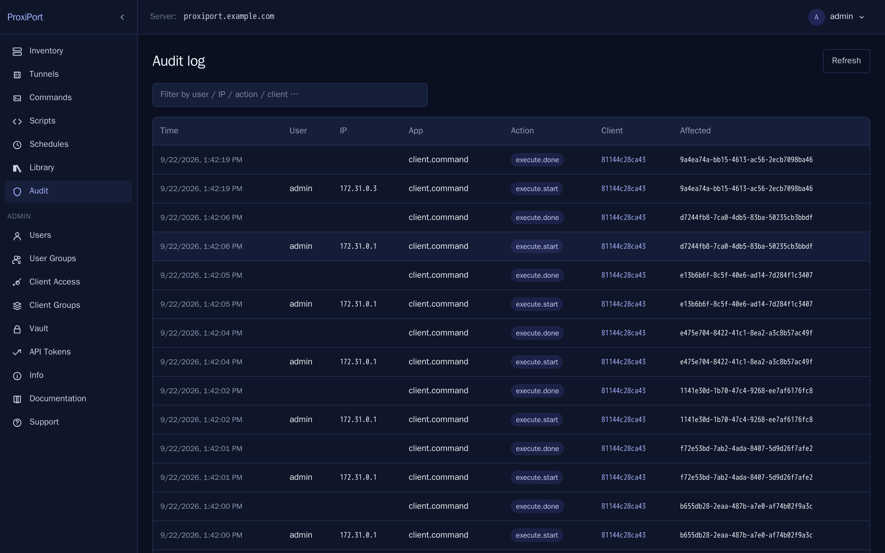
User and group admin¶
User groups gate which API endpoints (and therefore which SPA
sections) each user can reach. The default admin group has every
permission set; build new groups by ticking only the columns the
role needs.
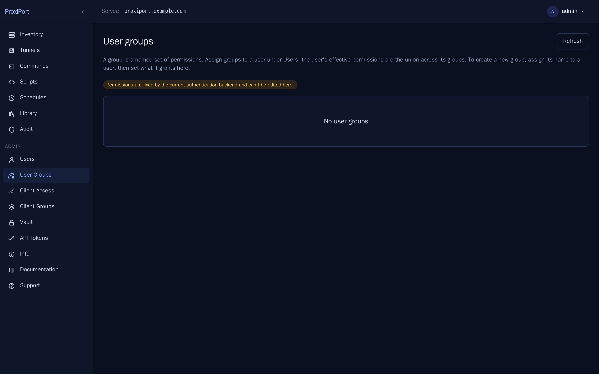
Client groups are operator-side labels you can attach to any agent. They are useful as targeting filters for the multi-target command page and for the audit-log query builder.
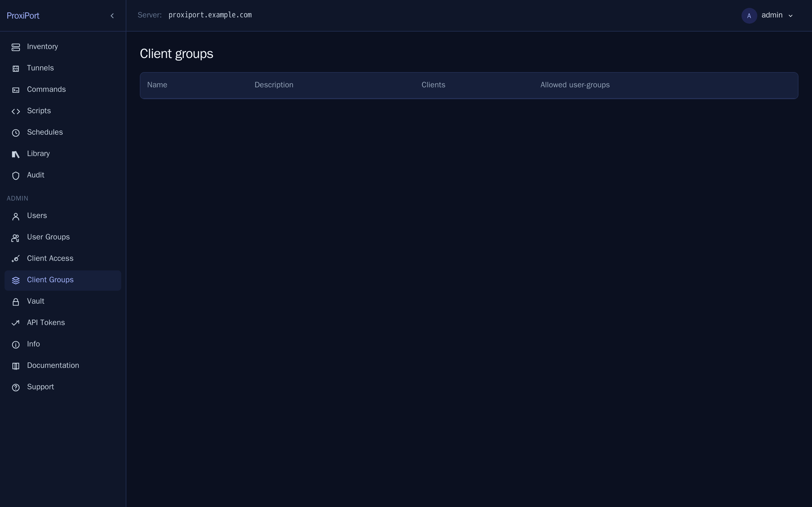
Each user has a profile page that shows their group membership and lets them rotate their own password.
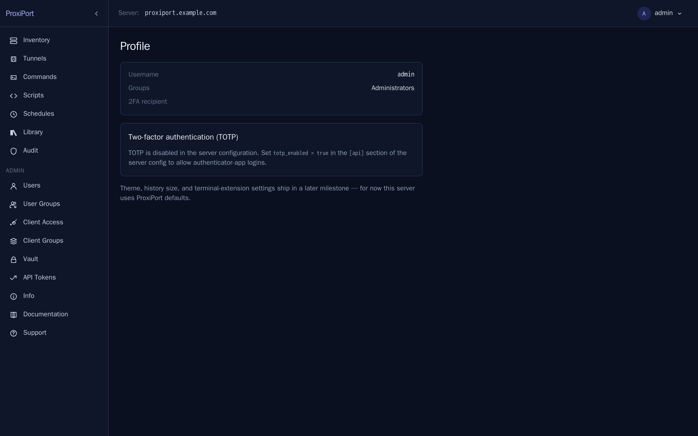
Common pitfalls¶
429 too many requestsimmediately after a 401. ProxiPort inherits openrport'sBanList: every failed auth attempt buys a 2-second deny on the keyed username. If the SPA fires three parallel API calls after a session expires, the first 401s and the rest 429. The SPA fixes this client-side by short-circuiting on a missing token; if you are writing your own client, do the same.- Agent refuses to connect with "fingerprint mismatch". Either
the server's
key_seedchanged or the agent'sfingerprint = "..."value is stale. Compare the fingerprint printed in the server log at startup against the agent config. - SPA shows the vault as locked even after entering the
passphrase. Vault passphrases are not persisted server-side
— they live in memory for the life of the process. A server
restart re-locks the vault. Enter the passphrase again via
Settings → Vault.
Where to get help¶
- File a bug or feature request on the GitHub repository.
- Private vulnerability reports go through GitHub Security
Advisories — see
SECURITY.md.